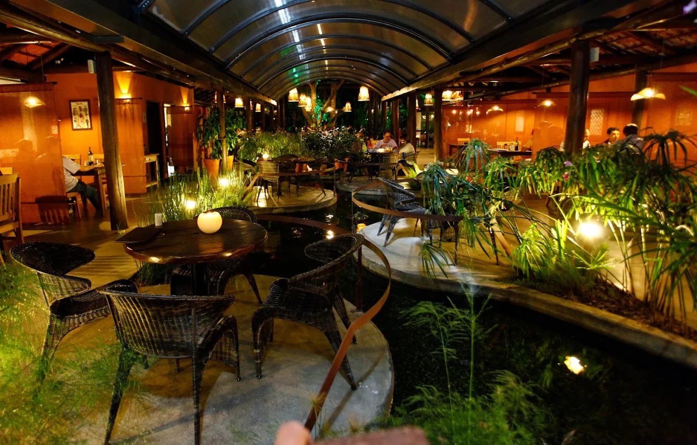
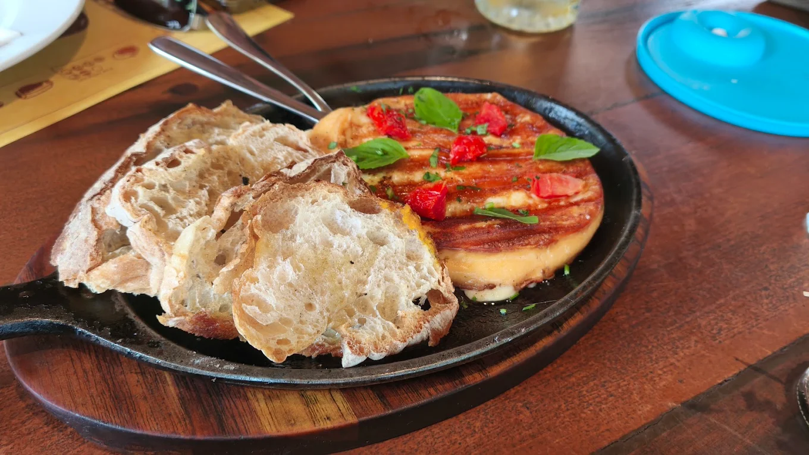

O Figueira Restaurante é uma ótima opção para seu happy hour com a família ou com os amigos. O ambiente aconchegante lhe reserva horas de lazer e descontração, contando com uma ampla área externa para as crianças, e um lago com peixes no centro do restaurante, com ração disponível para alimentá-los. Especializados em carnes nobres assadas na Parrilla, o restaurante oferece um cardápio variado, contando com diversas opções de carnes para atender os mais variados paladares. Possui uma extensa carta de cervejas e vinhos que foi montada buscando oferecer aos nossos clientes a satisfação de experimentar produtos de alta qualidade e sabor. São cerca de 50 tipos de cervejas e 80 tipos de vinhos de diversas marcas nacionais e importados, além de um saboroso chopp tirado na hora.

